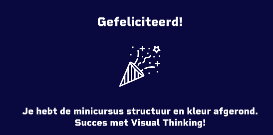
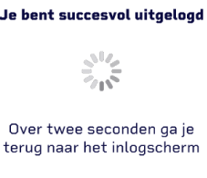
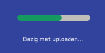

succes
Als de gebruiker een mini curses heeft afgerond wordt dit bericht weergegeven. In dit bericht wordt de gebruiker gefeliciteerd. Ook staat er welke mini cursus er is afgerond.
Uitloggen
Dit bericht wordt weergegeven als de gebruiker succesvol is uitgelogd. Hierbij wordt ook aangegeven over hoeveel seconden de gebruiker terug wordt gebracht naar het inlogscherm.
laden
Gebruikers kunnen items downloaden hierbij wordt tijdens het downloaden deze laadbalk weergegeven. Het groene gedeelte in de balk laat zien hoever het download proces is.
